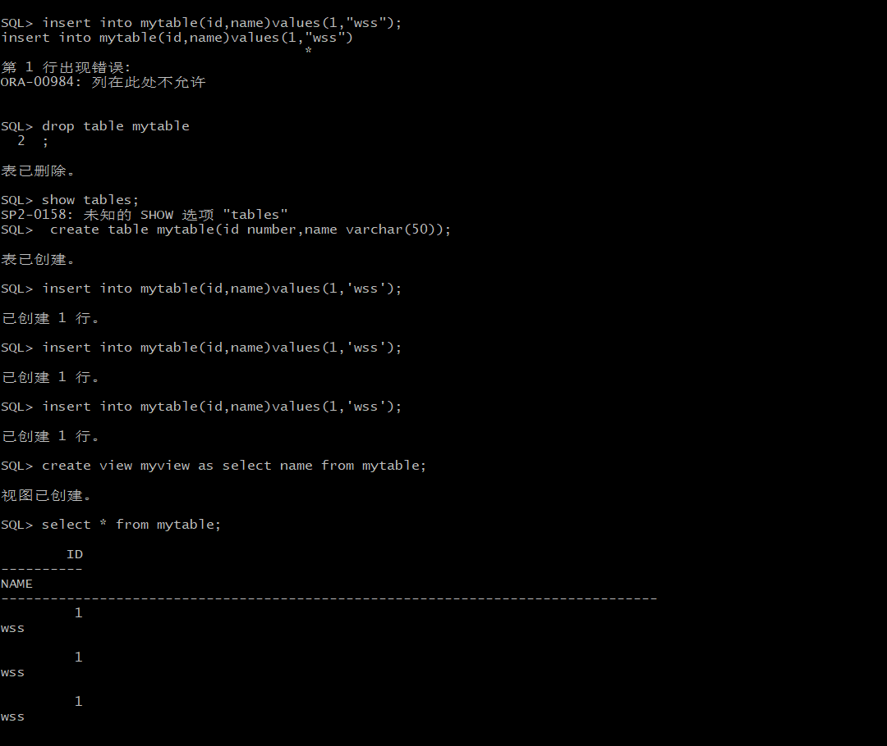
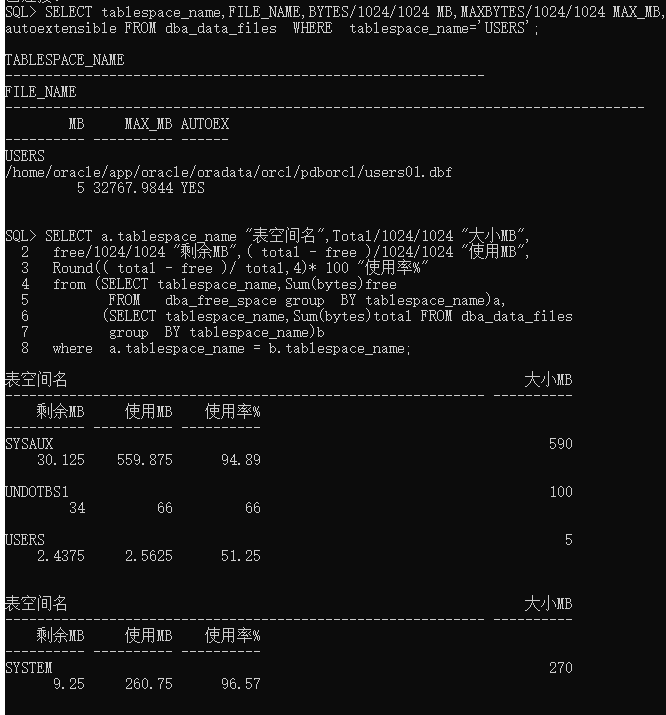

掌握用户管理、角色管理、权根维护与分配的能力，掌握用户之间共享对象的操作技能。
Oracle有一个开发者角色resource，可以创建表、过程、触发器等对象，但是不能创建视图。本训练要求：
在czm插接式数据中创建一个新的本地角色con_res_view，该角色包含connect和resource角色，同时也包含CREATE VIEW权限，这样任何拥有con_res_view的用户就同时拥有这三种权限。
创建角色之后，再创建用户new_user，给用户分配表空间，设置限额为50M，授予con_res_view角色。
最后测试：用新用户new_user连接数据库、创建表，插入数据，创建视图，查询表和视图的数据。
对于以下的对象名称con_res_view，new_user，在实验的时候应该修改为自己的名称。
语句“ALTER USER new_user QUOTA 50M ON users;”是指授权new_user用户访问users表空间，空间限额是50M。

当全班同学的实验都做完之后，数据库czm中包含了每个同学的角色和用户。 所有同学的用户都使用表空间users存储表的数据。 表空间中存储了很多相同名称的表mytable和视图myview，但分别属性于不同的用户，不会引起混淆。 随着用户往表中插入数据，表空间的磁盘使用量会增加。
以下样例查看表空间的数据库文件，以及每个文件的磁盘占用情况。 
本次实验完成了之后，我对sql语法的操作更加熟练，用sql操作Oracle数据库也更加熟悉了，之前一直听老师讲解还不是很了解，但是亲自操作之后还是很有感觉，从开始的懵懵懂懂到现在的相对熟悉，觉得自己还是有了一定的成长。